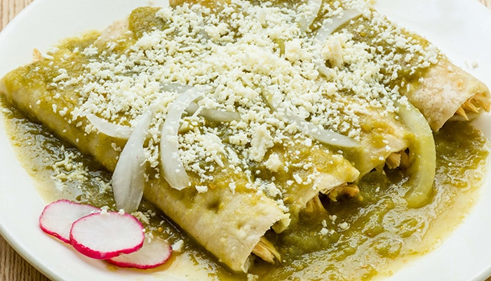

ENCHILADAS VERDES CON POLLO
Porsión para 6 personas aproximadamente.

Ingredientes
- 1 1/2 Kg. de tomates.
- 1/4 de chiles serranos.
- 1 1/2 Kg. pechuga de pollo
- 3/4 de qe queso canasto rayado
- 2 cebollas.
- 4 ajos.
- Aceite necesario.
- Sal al gusto.
- Consome de pollo (Knorr Suiza).
- Agua necesaria
- 500 ml. de crema.
Procedimiento
- Ponemos a hervir con agua la pechuga de pollo con la sal, los ajos "machacados" y una cebolla cortada en 4 durante unos 50 min. aproximadamente.
- Por otro lado hervimos con agua los tomates y los chiles serranos durante unos 15 min. aproximadamente.
- Ya que la pechuga de pollo este hervida, la desmenusamos.
- Molemos los chiles serranos y los tomates y posteriormente los ponemos a freir durnate unos 10 minutos aproximadamente.
- En un sarten ponemos aceite y freimos las tortillas.
- Para empezar a preparar las enchiladas,sumergimos las tortillas freidas en el guisado verde que hicimos con los chiles serranos y tomates
- Ponemos las tortilla en un plato y procedemos a ponerle pollo y enrollarla.
- Si queremos podemos bañar las enchiladas con mas guisado, si no, decoramos al gusto con la crema, queso y la cebolla.